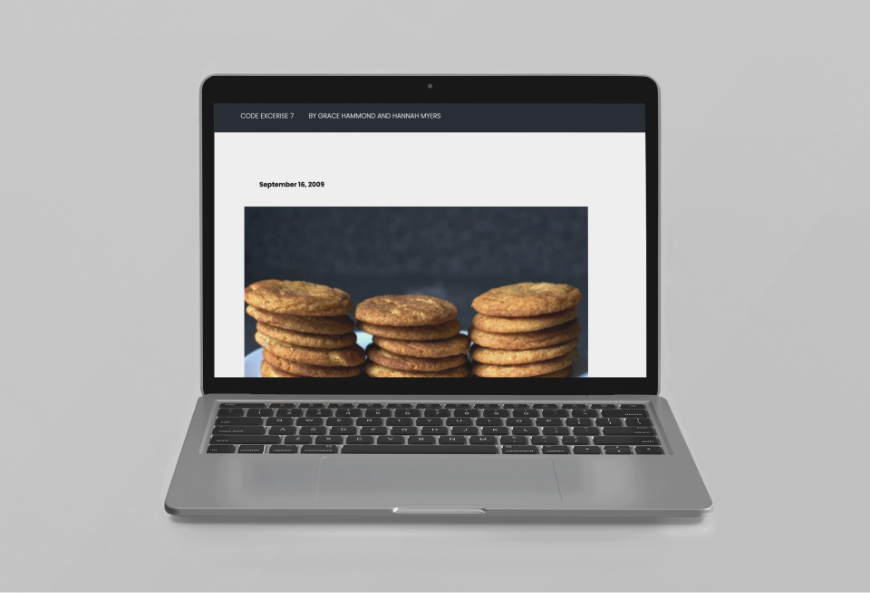
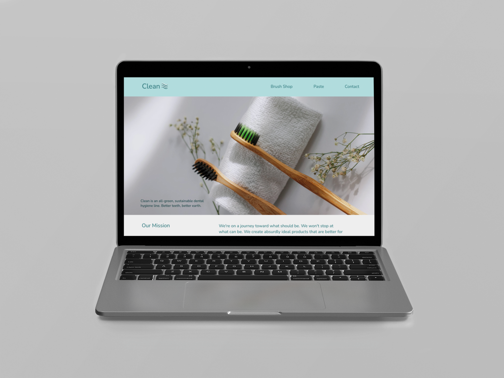

Arizona State University
Herberger Institute of Design School
Fall 2022 - Spring 2023
HTML and CSS were coded by a classmate and I. This was our first time coding anything on our own. Due to codepen's collaborative design we were able to help each other out when we got stuck.
With step-by-step in class instruction our class coded the Website Responsive Architects.
When I designed this site, I wanted it to be simple and modern. I kept a toned down color palette with a pop of color. The site sells all natural and good for the earth toothbrushes and toothpaste.
